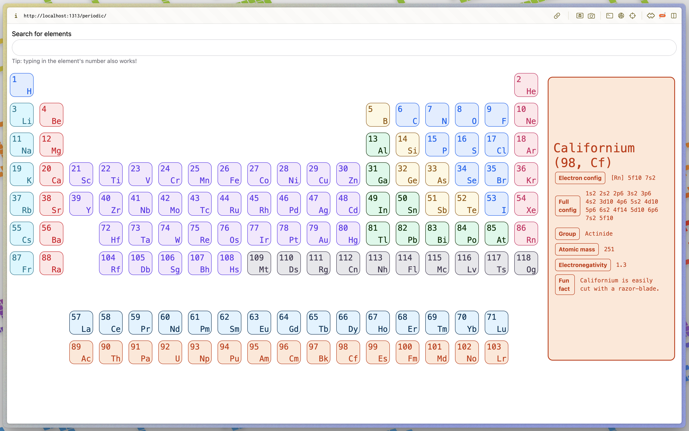
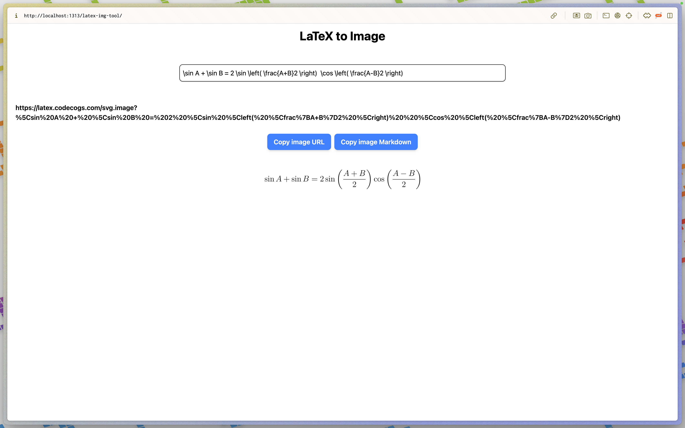

I built a thing
I recently made two new tools that improve my life, and hopefully a few other lives:
Aadish’s Periodic Table
This is a very simple periodic table, similar to one to one I built using SwiftUI for Mac a few months ago, but this time with web technologies to make it more accessible.

This was mainly designed for those in the OHS class OC005 (Principles of Chemistry), so it has things like (pretty!) colors to separate types of elements, electron configurations (both full and abbreviated), atomic masses, electronegativities, and fun facts.
LaTeX to Markdown
All of the Markdown editors I use don’t support LaTeX, and there’s already a tool to convert LaTeX to an image, and images are (obviously) supported by Markdown, so I just combined them into a very simple tool. (This can also be used in something like Google Docs, etc.)

How I built them
These were very simple projects, so no need for a build step of any type (i.e., TypeScript/React/Astro/etc. were not needed). All it took was HTML and Javascript. I also used some inline CSS, but mostly Tailwind CSS. These were my first projects using Tailwind CSS, and I’ve found myself really loving it. Note that I did import Tailwind using the CDN, which isn’t recommended for production use, but eh, it’s fine for a small project like this.
The JavaScript for the periodic table was fairly interesting; I basically have a hierarchy of elements that generates the HTML for the table, which is then inserted into the DOM. Each element has an id which is how I attach the click event listeners. I also embed Fuse.js for the fuzzy search functionality.
The end!
There are definitely a lot of features that I would love to add to these tools, but honestly they are fine for my use and I’ve got bigger fish (coding projects) to fry, so I probably won’t work on them in the near future. Thanks for reading!